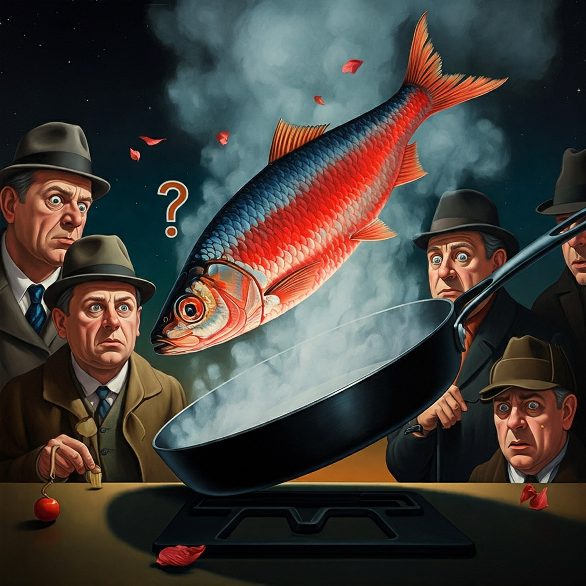

Red Herrings: Not Just for Mystery Novels Anymore!
Forget the Mona Lisa and the Starry Night! The art world's latest obsession is a bit more... fishy. Yes, we're talking about red herrings, those misleading clues that send detectives on wild goose chases in mystery novels. But who knew they could be so aesthetically pleasing? Artist Hugo Fisch (we see what you did there, Hugo!) has taken the art world by storm with his quirky exhibition, "The Art of Deception." The centerpiece? A series of vibrant paintings featuring, you guessed it, red herrings in all their glory. From a school of herrings forming a cryptic message to a lone herring disguised as a banana (don't ask!), Fisch's paintings are as perplexing as they are captivating. Critics are baffled, art historians are scratching their heads, and the public is clamoring for more. "I wanted to challenge the notion of what constitutes art," says Fisch with a mischievous grin. "Why not elevate the humble herring to a position of artistic prominence? After all, they're masters of disguise, leading unsuspecting predators astray. Isn't that a form of art in itself?" Whether you appreciate the irony or simply enjoy the vibrant hues of these fishy masterpieces, one thing is certain: Fisch's red herrings have certainly got the art world hooked. Just don't expect them to lead you to any answers – unless, of course, the answer is "herring."